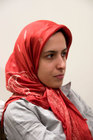

|
|
|
Browsing
Contact Us |
Campaigners |
Face to Face |
Tribune |
Interview |
News |
On the Web |
One Million |
Report
Farsi | Français | German | Italian | Spanish | العربية Also in this section
|
 Release on Third Party Gaurantee Maryam Malek Released After 5 Days DetentionTuesday 28 April 2009 Maryam Malek Released on Third Party Guarantee Change for Equality: April 29, 2009: Maryam Malek, a member of the Campaign who was arrested on April 25, 2009 was released from Evin Prison on Wednesday April 29, after 5 days in detention. On April 28, members of the Mothers Committee submitted a letter to the Judiciary protesting the recent pressures on campaign and demanding that the bail order of 20 million Tomans (roughly $20,000) issued in the case of Maryam Malek, demanding that the bail be reduced to a third party guarantee. The day before her release, Maryam was transferred to section 209 of Evin prison, where she was interrogated once again. Maryam was arrested on Saturday 25 April, following summons to report to the Revolutionary Courts for interrogation. She was initially transferred to Vozara detention center and later to Evin prison. She has been charged with “actions against national security” through the spreading of propaganda against the state and membership in the One Million Signatures Campaign. Maryam Malek Transfered to Evin Prison Change for Equality: April 26, 2009: Maryam Malek a member of the One Million Signatures Campaign, was transferred to Evin Prison on April 26, 2009. On the morning of April 26, 2009 Maryam Malek who was being detained at Vozara Detention center, was transferred to the Security Police Station, and after several hours of interrogation was transferred to Security Branch 2 of the Revolutionary Courts. Mr. Heydari Fard, the investigative judge in charge of the case, by citing articles 499 and 500 of the Penal Code, charged Maryam with the spreading of “Propaganda Against the State” and a new charge of “membership in the One Million Signatures Campaign.” Maryam has denied the charges against her. A bail order in the amount of 20 Million Tomans was issued in this case. Maryam has explained to court officials that neither she nor her family has the ability to post this amount of bail. As a result, she was arrested and transferred to Evin Prison. Judge Heydari Fard has announced that the case is in the investigative stages and that interrogations of Maryam are ongoing. Maryam Malek is a 26 year old college student and a member of the One Million Signature Campaign. She has written extensively about the difficulties women face in family court due to discriminatory laws. From a religious family herself, she has fought hard to obtain her rights as well. Her involvement in the Campaign stems from her personal experiences of being denied equal opportunities. This is the first time that a member of the Campaign has been officially charged with being involved in the Campaign. The charge infers that the Campaign is an illegal organization. Like Maryam, all members of the Campaign deny that their activities are illegal and strongly contend that they are acting within the law and their basic rights as citizens to have their voices and objections heard by other citizens and their representatives in Parliament. Read some of Maryam’s reports from the Family Courts and Campaign meetings, as well as an account of her experience in collecting signatures in support of the Campaign’s petition, which demands changes to laws that discriminate against women. Two Generations Working Side-by-Side to Collect Signatures A Microcosm of Life Under Discriminatory Laws Writing about Discriminatory Laws Does not Constitute Disruption of Public Opinion, by Maryam Malek and Aida Saadat |